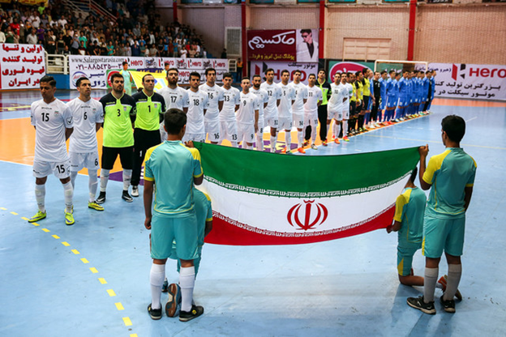

تاریخچه حضور ایران در جام جهانی فوتسال

هنگ کنگ - 1992
ایران در این بازیها با هلند، ایتالیا و پاراگوئه همگروه بود و توانست به عنوان تیم اول به مرحله بعدی صعود کند. در مرحله بعدی هم با تیمهای اسپانیا، بلژیک و لهستان همگروه شد و باز هم به عنوان اولین تیم صعود کرد اما این بار در مرحله نیمه نهایی برابر آمریکا شکست خورد و از رسیدن به فینال بازماند. ایران در مرحله ردهبندی هم به اسپانیا باخت تا به رده چهارم جهان قناعت کند. آقای گل این مسابقهها نیز یک ایرانی بود و سعید رجبی کفش طلای دومین دوره جام جهانی را از آن خود کرد. سید مهدی ابطحی هم به عنوان دومین بازیکن جام انتخاب شد و جام اخلاق به ایران رسید.
سرمربیگری ایران در سال ۹۲ را محمد مایلی کهن بر عهده داشت و بازیکنانش را هم بهزاد غلامپور، صادق ورمزیار، اصغر اکبری، محمود سجادی، محسن گروسی، اکبر یوسفی، سید مهدی ابطحی، مجید صالح، آرش نوآموز، اصغر مدیرروستا، سعید رجبی، عبدالله آقابابازاده تشکیل میدادند.
اسپانیا - 1996
تیم ملی برای اعزام به این مسابقهها پوست انداخت و تیم متحول شدهای نسبت به دوره قبل به اسپانیا رفت اما نتوانست حتی قسمتی از افتخارات هنگ کنگ را هم تکرار کند. ایران که در این مسابقهها با سرمربیگری منصور پورحیدری شرکت میکرد، با تیمهای برزیل، بلژیک و کوبا همگروه بود.
تیم ملی در اولین بازی، کوبا را گلباران کرد اما پس از آن به بلژیک باخت و با اختلاف زیاد هم برابر برزیل تن به شکست داد تا در همان دور اول از گردونه رقابتها خارج شود. بازیکنان ایران را در این دوره، سعید سجادی، مرحوم مسعود استیلی، صادق ورمزیار، رضا زرخانلی، مجید صالح، علی جوادی، حسین حسینی، هاشم حیدری، حسن ارسلانی، محمد مهرانپور، مهدی سپید دست و محمدعلی یحیوی تشکیل میدادند.
گواتمالا - 2000
در این دوره از مسابقات، محمدرضا حیدریان، بابک معصومی و وحید شمسایی برای اولین بار حضور در جام جهانی را تجربه میکردند و در کنار آنها علی صانعی، امیر فراشی، صفرعلی کاظمی، احمد پریآذر، سیامک داداشی، علیرضا افضل، احمد باغبانباشی، کاظم محمدی، اصغر قهرمانی، مجتبی معینی و محسن طلوعی دیگر بازیکنان حاضر در این دوره از مسابقهها بودند و حسین شمس هم برای اولین بار روی نیمکت تیم ملی مینشست. ایران در این بازیها برای دومین بار با اسپانیا و کوبا همگروه شد و آرژانتین هم دیگر تیم گروه D بود که ایران در آن قرار داشت. شاگردان شمس در گواتمالا امید چندانی به صعود نداشتند چرا که این بازیها برای تمام بازیکنان اولین تجربه جهانیشان بود. همین اتفاق هم افتاد و ایران برای دومین بار از گروهش بالا نیامد. اولین نسل طلایی فوتسال هرچند در این بازیها به موفقیتی دست پیدا نکردند اما با تجربهای که به دست آورد مسیری را طراحی می کرد که امروز به کسب 11 قهرمانی آسیا منجر شده است.
ملیپوشان در این دوره در اولین بازی با نتیجه نزدیک به آرژانتین باختند و پس از دومین باخت برابر اسپانیا و شکست کوبا برای دومین بار پس از سوم شدن در گروه از صعود به مرحله حذفی بازماندند.
چین تایپه - 2004
تیم جوانی که در جام جهانی ۲۰۰۰ حضور پیدا کرده بود، با تجربه خوبی به این مسابقهها آمده بود و بازیکنانی مثل محمدرضا حیدریان، وحید شمسایی و بابک معصومی در اوج بودند. همه اینها باعث شده بود تا ایران با هدایت محمدحسن انصاری فرد امیدوار باشد که طلسم را بشکند و پس از ۱۲ سال دوباره به مرحله حذفی جام جهانی برسد. اما این بار هم شانس با ایران یار نبود و از آنجایی که تیم ملی ایران در قرعهکشی مسابقهها در سید سوم قرار میگرفت با تیمهای مدعی مثل آرژانتین و پرتغال همگروه شد و در این میان توانست تنها از سد کوبا حریف همیشه بازندهاش بگذرد. البته این دوره نیز ضرری برای تیم ملی نداشت بلکه با معرفی چند بازیکن جوان و آیندهدار، فوتسال ایران را بیمه کرد. محمد کشاورز، علیاصغر حسنزاده، رضا ناصری، محمود هاشمزاده، محمود لطفی و فرهاد فخیم در این بازیها برای اولین بار تجربه جهانی کسب و آینده درخشانی را برای خودشان ترسیم کردند.
برزیل - 2008
ایران که در این دوره با تیمهای اسپانیا، چک، لیبی و اروگوئه همگروه بود، در همان اولین بازی برای حریفان خط و نشان کشید. شاگردان شمس در نیمه اول بازی ۳ گل به اسپانیا زدند اما در نیمه دوم پس از دریافت سه گل بازی به تساوی کشیده شد.
تیم ایران همچنین برابر لیبی و اروگوئه با نتیجه مشابه چهار بر دو به پیروزی رسید و در آخرین بازی مرحله گروهی با نتیجه سه بر دو از سد چک گذشت تا همامتیاز با اسپانیا و تفاضل گل کمتر به عنوان تیم دوم از گروه D به مرحله بعدی صعود کند. ایران سپس با برزیل، ایتالیا و اوکراین همگروه شد م لیپوشان ابتدا تنها با یک گل به برزیل باختند و سپس با نتیجه نزدیک پنج بر چهار از سد اوکراین گذاشتند. اما در سومین بازی و در حالی که ایران از حریفش پیش بود، ایتالیا در در "۵۱ثانیه" مانده به اتمام بازی گل تساوی را زد و همامتیاز با ایران اما با اختلاف تفاضل تنها یک گل به مرحله نیمه نهایی و جمع ۴ تیم رسید تا حسرت ایران ۲۰ ساله شود.
این دوره هم مثل دورههای قبلی جام جهانی به پیشرفت فوتسال در ایران کمک زیادی کرد. البته در جام جهانی برزیل دیگر شکستی به چشم نمیآمد و به هر نتیجهای که کسب شد با دید موفقیت نگاه شد. حاصل این موفقیت هم معرفی بازیکنانی مثل محمد طاهری، محمد کشاورز، علیاصغر حسنزاده و... بود و از محبوب شدن فوتسال بین مردم، نفع زیادی به این رشته رسید تا جایی که قراردادهای بازیکنان ملیپوش در لیگ برتر پا به پای فوتبالیها پیشرفت میکرد. اما شاید مهمترین دستاورد این بازیها این بود که الان فوتسال ایران برای کسب سکو در جهان نقشه میکشد.
تایلند - 2012
در این دوره از مسابقات هرچند تیمی متشکل از جوانها و با تجربهها شرکت کرد اما حواشی بسیار قبل از اعزام، آرامش را از تیم ملی گرفت. دعوت نکردن علی صانعی از وحید شمسایی به تیم ملی جرقه این حواشی را زد و در ادامه مصاحبههای تند شمسایی علیه صانعی و ترابیان و همچنین خداحافظی جواد اصغری مقدم از تیم ملی و مصاحبههای تند او علیه کادرفنی تیم ملی، شرایط سختی برای ایران در جام جهانی به وجود آورد.
ایران در این دوره با اسپانیا، پاناما و مراکش هم گروه شد. شاگردان علی صانعی در اولین بازی خود مقابل اسپانیا به تساوی دو بر دو رسیدند و سپس مقابل مراکش با نتیجه دو بر یک پیروز شدند. فوتسالیستهای ایران در آخرین بازی مرحله گروهی نیز با نتیجه چهار بر سه از سد پاناما گذشتند و به عنوان تیم دوم به جمع ۱۶ تیم برتر جام رسیدند.
اما تیم ملی در مرحله یک هشتم نهایی اسیر بازی دفاعی کلمبیا شد و با باخت دو بر یک از راهیابی به جمع هشت تیم برتر بازماند. این باخت سرآغاز تحولات در کمیته فوتسال و تیم ملی بود و باعث شد عباس ترابیان بعد از سالها از کمیته فوتسال برود و رضا افتخاری جانشین او شود. علی صانعی هم با استعفا از سرمربیگری تیم ملی، جای خود را به خسوس کاندلاس اسپانیایی داد.
کلمبیا - 2016
تیم ملی فوتسال ایران در هشتمین دوره جام جهانی برای چهارمین بار با اسپانیا همگروه شد. آذربایجان تیم دهم رنکینگ جهان و مراکش قهرمان قاره آفریقا نیز دیگر رقبای ایران در گروه F بودند. بسیاری از کارشناسان گروه ایران را گروه مرگ عنوان کرده بودند.
سید محمد ناظم الشریعه هدایت تیم را به عهده داشت و محمد هاشم زاده به عنوان دستیار و علی صانعی به عنوان سرپرست در کادرفنی حضور داشتند.
ایران با شکست برابر اسپانیا، برد برابر مراکش و تساوی برابر آذربایجان، با تفاضل گل کم تر، به عنوان تیم سوم به مرحله بعد صعود کرد. ایران در مرحله یک هشتم نهایی با برزیل رو به رو شد و در عین ناباوری، برزیل را شکست داد. در مرحله بعد نیز پاراگوئه را شکست داد و با روسیه در مرحله نیمه نهایی رو به رو شد. ایران با شکست 4 به 3 مقابل روسیه، برای مقام سوم، پرتقال را در ضربات پنالتی شکست داد و سوم جام جهانی 2016 شد. اینگونه بهترین عملکرد ایران در جام جهانی به ثبت رسید.
احمد اسماعیل پور نیز برنده توپ برنز جام جهانی شد.